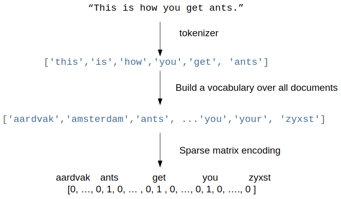

scikit-笔记22:超大数据集下的文本分类与情感分析
Table of Contents
1 two good post , should read in future
2 Scalability Issues
The sklearn.feature_extraction.text.CountVectorizer and
sklearn.feature_extraction.text.TfidfVectorizer classes suffer from a number
of scalability issues that all stem from the internal usage of the
vocabulary_ attribute (a Python dictionary) used to map the unicode string
feature names to the integer feature indices.
The main scalability issues are:
- Memory usage of the text vectorizer: all the string representations of the features are loaded in memory
- Parallelization problems for text feature extraction: the
vocabulary_would be a shared state: complex synchronization and overhead - Impossibility to do online or out-of-core / streaming learning: the
vocabulary_needs to be learned from the data: its size cannot be known before making one pass over the full dataset
2.0.1 how vocabulary_ work
To better understand the issue let's have a look at how the vocabulary_
attribute work. At fit time the tokens of the corpus are uniquely indentified
by a integer index and this mapping stored in the vocabulary:
from sklearn.feature_extraction.text import CountVectorizer vectorizer = CountVectorizer(min_df=1) vectorizer.fit([ "The cat sat on the mat.", ]) vectorizer.vocabulary_
{'cat': 0, 'mat': 1, 'on': 2, 'sat': 3, 'the': 4}
The vocabulary is used at transform time to build the occurrence matrix:
after fit(means model built finished):
- model.vocabulary_ : a dict with item format 'word': numoccurence .
- model.getfeaturenames : like the keys of this dict
- model.transform : return the train data point, numoccurence of each word in each sample.
X = vectorizer.transform([ "The cat sat on the mat.", "This cat is a nice cat.", ]).toarray() print(len(vectorizer.vocabulary_)) print(vectorizer.vocabulary_) print(vectorizer.get_feature_names()) print(X)
Let's refit with a slightly larger corpus:
from sklearn.feature_extraction.text import CountVectorizer vectorizer = CountVectorizer(min_df=1) vectorizer.fit([ "The cat sat on the mat.", "The quick brown fox jumps over the lazy dog.", ]) vectorizer.vocabulary_
{'brown': 0,
'cat': 1,
'dog': 2,
'fox': 3,
'jumps': 4,
'lazy': 5,
'mat': 6,
'on': 7,
'over': 8,
'quick': 9,
'sat': 10,
'the': 11}
2.0.2 why can't build vocabulary in parallel
The vocabulary_ is the (logarithmically) growing with the size of the training corpus. Note that we could not have built the vocabularies in parallel on the 2 text documents as they share some words hence would require some kind of shared datastructure or synchronization barrier which is complicated to setup, especially if we want to distribute the processing on a cluster.
With this new vocabulary, the dimensionality of the output space is now larger:
X = vectorizer.transform([ "The cat sat on the mat.", "This cat is a nice cat.", ]).toarray() print(len(vectorizer.vocabulary_)) print(vectorizer.get_feature_names()) print(X)
3 Hashing trick
3.1 IMDB dataset intro
To illustrate the scalability issues of the vocabulary-based vectorizers, let's load a more realistic dataset for a classical text classification task: sentiment analysis on text documents. The goal is to tell apart negative from positive movie reviews from the Internet Movie Database (IMDb).
In the following sections, with a large subset of movie reviews from the IMDb that has been collected by Maas et al.
A. L. Maas, R. E. Daly, P. T. Pham, D. Huang, A. Y. Ng, and C. Potts. Learning Word Vectors for Sentiment Analysis. In the proceedings of the 49th Annual Meeting of the Association for Computational Linguistics: Human Language Technologies, pages 142–150, Portland, Oregon, USA, June 2011. Association for Computational Linguistics.
This dataset contains 50,000 movie reviews, which were split into 25,000 training samples and 25,000 test samples. The reviews are labeled as either negative (neg) or positive (pos). Moreover, positive means that a movie received >6 stars on IMDb; negative means that a movie received <5 stars, respectively.
Assuming that the ../fetchdata.py script was run successfully the following files should be available:
3.1.1 load dataset from file by sklearn.datasets.load_files()
import os train_path = os.path.join('datasets', 'IMDb', 'aclImdb', 'train') test_path = os.path.join('datasets', 'IMDb', 'aclImdb', 'test')
Now, let's load them into our active session (load into memory by default) via
scikit-learn's load_files function
from sklearn.datasets import load_files train = load_files(container_path=(train_path), categories=['pos', 'neg']) test = load_files(container_path=(test_path), categories=['pos', 'neg'])
NOTE: Since the movie datasets consists of 50,000 individual text files, executing the code snippet above may take ~20 sec or longer. The loadfiles function loaded the datasets into sklearn.datasets.base.Bunch objects, which are Python dictionaries:
3.1.2 get information of datasets
for more information, see here sklearn.datasets.loadfiles()
train.keys()
dict_keys(['data', 'filenames', 'target_names', 'target', 'DESCR'])
In particular, we are only interested in the data and target arrays.
These two methods are very useful for get info of 'target'
np.unique(data['target'])
np.bincount(data['target'])
import numpy as np for label, data in zip(('TRAINING', 'TEST'), (train, test)): print('\n\n%s' % label) print('Number of documents:', len(data['data'])) print('\n1st document:\n', data['data'][0]) print('\n1st label:', data['target'][0]) print('\nClass names:', data['target_names']) print('Class count:', np.unique(data['target']), ' -> ', np.bincount(data['target']))
As we can see above the 'target' array consists of integers 0 and 1, where 0 stands for negative and 1 stands for positive.
3.2 The Hashing Trick
Remember the bag of word representation using a vocabulary based vectorizer: 
To workaround the limitations of the vocabulary-based vectorizers, one can use
the hashing trick. Instead of building and storing an explicit mapping from the
feature names to the feature indices in a Python dict, we can just use a hash
function and a modulus operation:
More info and reference for the original papers on the Hashing Trick in the following site as well as a description specific to language here.
3.2.1 hash each word
from sklearn.utils.murmurhash import murmurhash3_bytes_u32 # encode for python 3 compatibility for word in "the cat sat on the mat".encode("utf-8").split(): print("{0} => {1}".format( word, murmurhash3_bytes_u32(word, 0) )) print("{0} => {1}".format( word, murmurhash3_bytes_u32(word, 0) % 2 ** 20))
This mapping is completely stateless and the dimensionality of the output space
is explicitly fixed in advance (here we use a modulo 2 ** 20 which means
roughly 1M dimensions). The makes it possible to workaround the limitations
of the vocabulary based vectorizer both for parallelizability and online /
out-of-core learning.
The HashingVectorizer class is an alternative to the CountVectorizer (or
TfidfVectorizer class with use_idf=False) that internally uses the
murmurhash hash function:
from sklearn.feature_extraction.text import HashingVectorizer h_vectorizer = HashingVectorizer(encoding='latin-1') h_vectorizer
HashingVectorizer(alternate_sign=True, analyzer='word', binary=False, decode_error='strict', dtype=<class 'numpy.float64'>, encoding='latin-1', input='content', lowercase=True, n_features=1048576, ngram_range=(1, 1), non_negative=False, norm='l2', preprocessor=None, stop_words=None, strip_accents=None, token_pattern='(?u)\\b\\w\\w+\\b', tokenizer=None)
It shares the same "preprocessor", "tokenizer" and "analyzer" infrastructure:
analyzer = h_vectorizer.build_analyzer() analyzer('This is a test sentence.')
['this', 'is', 'test', 'sentence']
We can vectorize our datasets into a scipy sparse matrix exactly as we would
have done with the CountVectorizer or TfidfVectorizer, except that we can
directly call the transform method: there is no need to fit as HashingVectorizer
is a stateless transformer:
docs_train, y_train = train['data'], train['target'] docs_valid, y_valid = test['data'][:12500], test['target'][:12500] docs_test, y_test = test['data'][12500:], test['target'][12500:]
3.2.2 why % 2 ** 20
The dimension of the output is fixed ahead of time to n_features=2 ** 20 by
default (nearly 1M features) to minimize the rate of collision on most
classification problem while having reasonably sized linear models (1M weights
in the coef_ attribute):
h_vectorizer.transform(docs_train)
<25000x1048576 sparse matrix of type '<class 'numpy.float64'>' with 3446628 stored elements in Compressed Sparse Row format>
3.2.3 compare computational efficiency of HashingVectorizer against CountVectorizer
Now, let's compare the computational efficiency of the HashingVectorizer to the
CountVectorizer:
h_vec = HashingVectorizer(encoding='latin-1') %timeit -n 1 -r 3 h_vec.fit(docs_train, y_train) #The slowest run took 4.42 times longer than the fastest. This could mean that #an intermediate result is being cached. # 7.53 µs ± 5.13 µs per loop (mean ± #std. dev. of 3 runs, 1 loop each)
from sklearn.feature_extraction.text import CountVectorizer count_vec = CountVectorizer(encoding='latin-1') %timeit -n 1 -r 3 count_vec.fit(docs_train, y_train) # 2.95 s ± 6.17 ms per loop (mean ± std. dev. of 3 runs, 1 loop each)
As we can see, the HashingVectorizer is much faster than the
Countvectorizer in this case.
- 7.53 µs ± 5.13 µs per loop (mean ± #std. dev. of 3 runs, 1 loop each)
- 2.95 s ± 6.17 ms per loop (mean ± std. dev. of 3 runs, 1 loop each)
3.2.4 train LogisticRegression classifier with HashingVectorizer
Finally, let us train a LogisticRegression classifier on the IMDb training subset:
from sklearn.linear_model import LogisticRegression from sklearn.pipeline import Pipeline h_pipeline = Pipeline([ ('vec', HashingVectorizer(encoding='latin-1')), ('clf', LogisticRegression(random_state=1)), ]) h_pipeline.fit(docs_train, y_train)
Pipeline(memory=None,
steps=[('vec', HashingVectorizer(alternate_sign=True, analyzer='word', binary=False,
decode_error='strict', dtype=<class 'numpy.float64'>,
encoding='latin-1', input='content', lowercase=True,
n_features=1048576, ngram_range=(1, 1), non_negative=False,
norm='l2', p...nalty='l2', random_state=1, solver='liblinear', tol=0.0001,
verbose=0, warm_start=False))])
print('Train accuracy', h_pipeline.score(docs_train, y_train)) print('Validation accuracy', h_pipeline.score(docs_valid, y_valid))
import gc del count_vec del h_pipeline gc.collect()
101
4 Out-of-Core learning
4.0.1 what if dataset is too large to fit into RAM
Out-of-Core learning is the task of training a machine learning model on a dataset that does not fit into memory or RAM. This requires the following conditions:
- a feature extraction layer with fixed output dimensionality
- knowing the list of all classes in advance (in this case we only have positive and negative reviews)
- a machine learning algorithm that supports incremental learning (the
partial_fitmethod in scikit-learn).
In the following sections, we will set up a simple batch-training function to
train an SGDClassifier iteratively.
4.1 out-of-core learning steps
4.1.1 save file names as python list
But first, let us load the file names into a Python list:
train_path = os.path.join('datasets', 'IMDb', 'aclImdb', 'train') train_pos = os.path.join(train_path, 'pos') train_neg = os.path.join(train_path, 'neg') fnames = [os.path.join(train_pos, f) for f in os.listdir(train_pos)] +\ [os.path.join(train_neg, f) for f in os.listdir(train_neg)] fnames[:3]
['datasets/IMDb/aclImdb/train/pos/5561_8.txt', 'datasets/IMDb/aclImdb/train/pos/8049_7.txt', 'datasets/IMDb/aclImdb/train/pos/9072_9.txt']
4.1.2 create target labels array
Next, let us create the target label array:
y_train = np.zeros((len(fnames), ), dtype=int) y_train[:12500] = 1 np.bincount(y_train)
array([12500, 12500])
4.1.3 batch train function implementation
Now, we implement the batchtrain function as follows, which return a SGDclassifier model.
from sklearn.base import clone def batch_train(clf, #<- classifier model fnames, #<- array, filenames labels, #<- array, labels iterations=25, #<- iteration times batchsize=1000,#<- size of each batch random_seed=1 #<- random seed ): # ---- do some configuration vec = HashingVectorizer(encoding='latin-1') #<- initial vectorizer model. idx = np.arange(labels.shape[0]) #<- create label array's index c_clf = clone(clf) #<- rng = np.random.RandomState(seed=random_seed) # ---- how many times you want to do batch learning for i in range(iterations): # each time randomly sample bathsize filenames indices # later will be used to index file content and related labels rnd_idx = rng.choice(idx, size=batchsize) # create an empty list, to save smapled file, used as dataset of SGD documents = [] # combine all sample files' content into 'documents' for i in rnd_idx: with open(fnames[i], 'r', encoding='latin-1') as f: documents.append(f.read()) # vectorize the sample files' inside 'documents' X_batch = vec.transform(documents) # index the related labels by indices array 'rnd_idx' batch_labels = labels[rnd_idx] # from classifier obj to classifier model c_clf.partial_fit(X=X_batch, y=batch_labels, classes=[0, 1])# Classes across all calls to # partial_fit. Can be obtained by via # np.unique(y_all), where y_all is the # target vector of the entire dataset. # This argument is required for the # first call to partial_fit and can be # omitted in the subsequent calls. # Note that y doesn’t need to contain # all labels in classes. return c_clf
Note that we are not using LogisticRegression as in the previous section, but we
will use a SGDClassifier with a logistic cost function instead. SGD stands
for stochastic gradient descent, an optimization alrogithm that optimizes the
weight coefficients iteratively sample by sample, which allows us to feed the
data to the classifier chunk by chuck.
And we train the SGDClassifier; using the default settings of the batchtrain function, it will train the classifier on 25*1000=25000 documents. (Depending on your machine, this may take >2 min)
4.1.4 training model
from sklearn.linear_model import SGDClassifier sgd = SGDClassifier(loss='log', random_state=1) # build a SGDClassifier obj and # pass it to batch_train sgd = batch_train(clf=sgd, fnames=fnames, labels=y_train)
4.1.5 evaluate the performance
Eventually, let us evaluate its performance:
vec = HashingVectorizer(encoding='latin-1') sgd.score(vec.transform(docs_test), y_test)
0.83176
4.2 Limitations of the Hashing Vectorizer
Using the Hashing Vectorizer makes it possible to implement streaming and parallel text classification but can also introduce some issues:
- The collisions can introduce too much noise in the data and degrade prediction quality,
- The HashingVectorizer does not provide "Inverse Document Frequency" reweighting (lack of a useidf=True option).
- There is no easy way to inverse the mapping and find the feature names from the feature index.
4.2.1 for drawbacks 1
The collision issues can be controlled by increasing the nfeatures parameters.
4.2.2 for drawbacks 2
The IDF weighting might be reintroduced by appending a TfidfTransformer instance
on the output of the vectorizer. However computing the idf_ statistic used for
the feature reweighting will require to do at least one additional pass over the
training set before being able to start training the classifier: this breaks the
online learning scheme.
4.2.3 for drawbacks 3
The lack of inverse mapping (the getfeaturenames() method of TfidfVectorizer) is even harder to workaround. That would require extending the HashingVectorizer class to add a "trace" mode to record the mapping of the most important features to provide statistical debugging information.
In the mean time to debug feature extraction issues, it is recommended to use
TfidfVectorizer(useidf=False) on a small-ish subset of the dataset to simulate
a HashingVectorizer() instance that have the get_feature_names() method and no
collision issues.
4.2.4 EXERCISE
EXERCISE: In our implementation of the batchtrain function above, we randomly draw k training samples as a batch in each iteration, which can be considered as a random subsampling with replacement. Can you modify the batchtrain function so that it iterates over the documents without replacement, i.e., that it uses each document exactly once per iteration?
5 Misc tools
5.1 scikit-learn
5.1.1 ML models by now
- from sklearn.datasets import makeblobs
- from sklearn.datasets import makemoons
- from sklearn.datasets import makecircles
- from sklearn.datasets import makescurve
- from sklearn.datasets import makeregression
- from sklearn.datasets import loadfiles *
- from sklearn.datasets import loadiris
- from sklearn.datasets import loaddigits
- from sklearn.datasets import loadbreastcancer
For all
Bunchobject return by manyload_xxx()is a dict-like obj, and you can:
- get all keys(attributes) by
bunch_obj.keys()- access all attributes by
bunch_obj.[the key_name return by keys()]
- from mpltoolkits.mplot3d import Axes3D
- from sklearn.modelselection import traintestsplit
- from sklearn.modelselection import crossvalscore
- from sklearn.modelselection import KFold
- from sklearn.modelselection import StratifiedKFold
- from sklearn.modelselection import ShuffleSplit
- from sklearn.modelselection import GridSearchCV
- from sklearn.modelselection import learningcurve
- from sklearn.featureextraction import DictVectorizer
- from sklearn.featureextraction.text import CountVectorizer
- from sklearn.featureextraction.text import HashingVectorizer *
- from sklearn.featureextraction.text import TfidfVectorizer
- from sklearn.featureselection import SelectPercentile
- from sklearn.featureselection import fclassif
- from sklearn.featureselection import fregression
- from sklearn.featureselection import chi2
- from sklearn.featureselection import SelectFromModel
- from sklearn.featureselection import RFE
- from sklearn.linearmodel import LogisticRegression
- from sklearn.linearmodel import LinearRegression
- from sklearn.linearmodel import Ridge
- from sklearn.linearmodel import Lasso
- from sklearn.linearmodel import ElasticNet
- from sklearn.neighbors import KNeighborsClassifier
- from sklearn.neighbors import KNeighborsRegressor
- from sklearn.neighbors.kde import KernelDensity *
- from sklearn.preprocessing import StandardScaler
- from sklearn.metrics import confusionmatrix, accuracyscore
- from sklearn.metrics import adjustedrandscore
- from sklearn.metrics.scorer import SCORERS
- from sklearn.metrics import r2score
- from sklearn.cluster import KMeans
- from sklearn.cluster import KMeans
- from sklearn.cluster import MeanShift
- from sklearn.cluster import DBSCAN # <<< this algorithm has related sources in LIHONGYI's lecture-12
- from sklearn.cluster import AffinityPropagation
- from sklearn.cluster import SpectralClustering
- from sklearn.cluster import Ward
- from sklearn.cluster import DBSCAN
- from sklearn.cluster import AgglomerativeClustering
- from scipy.cluster.hierarchy import linkage
- from scipy.cluster.hierarchy import dendrogram
- from scipy.stats.mstats import mquantiles
- from sklearn.metrics import confusionmatrix
- from sklearn.metrics import accuracyscore
- from sklearn.metrics import adjustedrandscore
- from sklearn.metrics import classificationreport
- from sklearn.preprocessing import Imputer
- from sklearn.dummy import DummyClassifier
- from sklearn.pipeline import makepipeline
- from sklearn.svm import LinearSVC
- from sklearn.svm import SVC
- from sklearn.svm import OneClassSVM *
- from sklearn.tree import DecisionTreeRegressor
- from sklearn.ensemble import RandomForestClassifier
- from sklearn.ensemble import GradientBoostingRegressor
- from sklearn.ensemble import IsolationForest
- from sklearn.decomposition import PCA
- from sklearn.manifold import TSNE
- from sklearn.manifold import Isomap
- from sklearn.utils.murmurhash import murmurhash3bytesu32
- from sklearn.base import clone *
5.1.2 sklearn.datasets.loadfiles()
5.1.2.1 intro
sklearn.datasets.load_files(container_path, # path of root folder description=None, categories=None, # list of sub folder names load_content=True,# true: load into memory; vice versa shuffle=True, encoding=None, # if load_content is true, should # specify value decode_error=’strict’, random_state=0)
Load text files with categories as subfolder names.
Individual samples are assumed to be files stored a two levels folder structure such as the following:
. Train/ . neg/ . file1.txt file2.txt … file42.txt . pos/ . file43.txt file44.txt …
The folder names are used as supervised signal label names. The individual file names are not important.
This function does not try to extract features into a numpy array or scipy sparse matrix. In addition, if loadcontent is false it does not try to load the files in memory.
To use text files in a scikit-learn classification or clustering algorithm, you
will need to use the sklearn.feature_extraction.text module to build a feature
extraction transformer that suits your problem.
If you set loadcontent=True, you should also specify the encoding of the text using the ‘encoding’ parameter. For many modern text files, ‘utf-8’ will be the correct encoding. If you leave encoding equal to None, then the content will be made of bytes instead of Unicode, and you will not be able to use most functions in sklearn.featureextraction.text.
Similar feature extractors should be built for other kind of unstructured data input such as images, audio, video.
5.1.2.2 return
dict_keys(['data', 'filenames', 'target_names', 'target', 'DESCR'])
data : Bunch, Dictionary-like object, the interesting attributes are:
- data: array of string, the raw text data to learn,
- filenames: array of string, the files holding it,
- target: array of int, give each subfolder in alphabetic order the integer index start from 0. It is classification labels of train dataset
- targetnames: array of string, the meaning of the labels,
- DESCR, the full description of the dataset.
. Train/ . neg/ . file1.txt file2.txt … file42.txt . pos/ . file43.txt file44.txt …
- data: len(data) = 44
- filenames: ['file1.txt', …, 'file44.txt']
- target: [0, 0, 0, ….,0, 1, 1]
- targetnames: ['neg', 'pos']
These two methods are very useful for get info of 'target'
np.unique(data['target'])
np.bincount(data['target'])
For all Bunch object return by many load_xxx() is a dict-like obj, and you can:
- get all keys(attributes) by
bunch_obj.keys() - access all attributes by
bunch_obj.[the key_name return by keys()]
5.1.3 sklearn.base.clone(estimator)
Constructs a new estimator with the same parameters.
Clone does a deep copy of the model in an estimator without actually copying attached data. It yields a new estimator with the same parameters that has not been fit on any data.
from sklearn.base import clone def batch_train(clf, fnames, labels, iterations=25, batchsize=1000, random_seed=1): vec = HashingVectorizer(encoding='latin-1') idx = np.arange(labels.shape[0]) c_clf = clone(clf) #<- clone the classifier 'clf' passed to this function rng = np.random.RandomState(seed=random_seed) for i in range(iterations): rnd_idx = rng.choice(idx, size=batchsize) documents = [] for i in rnd_idx: with open(fnames[i], 'r', encoding='latin-1') as f: documents.append(f.read()) # X_batch = vec.transform(documents) batch_labels = labels[rnd_idx] c_clf.partial_fit(X=X_batch, y=batch_labels, classes=[0, 1]) return c_clf
5.1.4 sklearn.random.choice()
numpy.random.choice(a, size=None, replace=True, p=None) Generates a random sample from a given 1-D array
from sklearn.base import clone def batch_train(clf, fnames, labels, iterations=25, batchsize=1000, random_seed=1): vec = HashingVectorizer(encoding='latin-1') idx = np.arange(labels.shape[0]) c_clf = clone(clf) rng = np.random.RandomState(seed=random_seed) for i in range(iterations): rnd_idx = rng.choice(idx, size=batchsize) # <- randomly choose # batch-size samples from idx # with replacement documents = [] for i in rnd_idx: with open(fnames[i], 'r', encoding='latin-1') as f: documents.append(f.read()) # X_batch = vec.transform(documents) batch_labels = labels[rnd_idx] c_clf.partial_fit(X=X_batch, y=batch_labels, classes=[0, 1]) return c_clf
5.1.5 sklearn.linearmodel.SGDClassifier
SGDClassifier(loss=’hinge’,
penalty=’l2’,
alpha=0.0001,
l1_ratio=0.15,
fit_intercept=True,
max_iter=None,
tol=None,
shuffle=True,
verbose=0,
epsilon=0.1,
n_jobs=1,
random_state=None,
learning_rate=’optimal’,
eta0=0.0,
power_t=0.5,
class_weight=None,
warm_start=False,
average=False,
n_iter=None)
The ‘log’ loss gives logistic regression, a probabilistic classifier. ‘modifiedhuber’ is another smooth loss that brings tolerance to outliers as well as probability estimates. ‘squaredhinge’ is like hinge but is quadratically penalized. ‘perceptron’ is the linear loss used by the perceptron algorithm. The other losses are designed for regression but can be useful in classification as well; see SGDRegressor for a description.